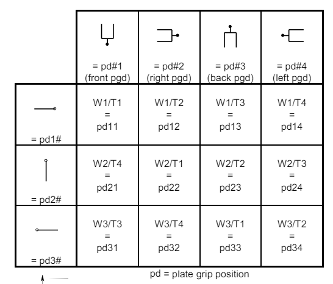

iSWAP Module#
The R0 module allows fine grained control of the iSWAP gripper.
Common tasks#
Parking
You can park the iSWAP using park_iswap().
await star_backend.park_iswap()
Opening gripper:
You can open the iSWAP gripper using iswap_open_gripper(). Warning: this will release any object that is gripped. Used for error recovery.
# opening all the way
await star_backend.iswap_open_gripper()
# opening partially to 90mm
await star_backend.iswap_open_gripper(open_position=90)
Closing gripper: note: this will throw an error if there is no object to grip.
await star_backend.iswap_close_gripper()
Rotations#
You can rotate the iSWAP to 12 predefined positions using iswap_rotate().
the positions and their corresponding integer specifications are shown visually here.

The iswap_rotate method can be used to move the wrist drive and the rotation drive simultaneously in one smooth motion. It takes a parameter for the rotation drive, and the final grip_direction of the iswap. The grip_direction is the same parameter used by pick_up_resource() and drop_resource(), and is with respect to the deck. This is easier than controlling the rotation drive, which is with respect to the wrist drive.
To extend the iSWAP fully to the left, call iswap_rotate(rotation_drive=STARBackend.RotationDriveOrientation.LEFT, grip_direction=GripDirection.RIGHT). GripDirection.RIGHT means the gripper will be gripping the object from the right hand side meaning the gripper fingers will be pointing left wrt the deck. Compared this to iswap_rotate(rotation_drive=STARBackend.RotationDriveOrientation.RIGHT, grip_direction=GripDirection.RIGHT), where the gripper fingers will still be pointing left wrt the deck, but the rotation drive is pointing right. This means the wrist drive is in “REVERSE” orientation (folded up).
Moving the iswap between two positions with the same grip_direction while changing the rotation drive will keep the plate pointing in one direction. The internal motion planner on the STAR will automatically adjust the wrist drive to keep the plate in the same orientation.
Controlling the wrist and rotation drive individually#
You can also control the wrist (T-drive) and rotation drive (W-drive) individually using rotate_iswap_wrist() and rotate_iswap_rotation_drive() respectively. Make sure you have enough space (you can use move_iswap_y_relative())
rotation_drive = random.choice([STARBackend.RotationDriveOrientation.LEFT, STARBackend.RotationDriveOrientation.RIGHT, STARBackend.RotationDriveOrientation.FRONT])
wrist_drive = random.choice([STARBackend.WristDriveOrientation.LEFT, STARBackend.WristDriveOrientation.RIGHT, STARBackend.WristDriveOrientation.STRAIGHT, STARBackend.WristDriveOrientation.REVERSE])
await star_backend.rotate_iswap_rotation_drive(rotation_drive)
await star_backend.rotate_iswap_wrist(wrist_drive)
Slow movement#
You can make the iswap move more slowly during sensitive operations using slow_iswap(). This is useful when you want to avoid splashing or other disturbances.
async with star_backend.slow_iswap():
await lh.move_plate(plate, plt_car[1])
Manual movement (teaching / calibration)#
For safety, move the other components as far away as possible before teaching. This is easily done using the firmware command
C0FY, implemented in PLR asposition_components_for_free_iswap_y_range:
await star_backend.position_components_for_free_iswap_y_range()
Move the iSWAP wrist and rotation drive to the correct orientation as explained above. Repeated: be careful to move the iSWAP to a position where it does not hit any other components. See commands below for how to do this.
You can then use the following three commands to move the iSWAP in the X, Y and Z directions. All units are in mm.
await star_backend.move_iswap_x(x)
await star_backend.move_iswap_y(y)
await star_backend.move_iswap_z(z)
Note that the x, y and z here refer to the center of the iSWAP gripper. This is to make it agnostic to plate size. But in PLR all locations are with respect to LFB (left front bottom) of the plate. To get the LFB after calibrating to the center, subtract the distance from the plate LFB to CCB:
from pylabrobot.resources import Coordinate
calibrated_position = Coordinate(x, y, z)
plate_lfb_absolute = calibrated_position - plate.get_anchor("c", "c", "b")
Then you get the plate’s LFB position in absolute coordinates. The location of the plate will probably be defined wrt some other resource. To get the relative location of the plate wrt that parent resource, you have to subtract the absolute location of the parent from the absolute location of the plate:
parent_absolute = parent.get_location_wrt(deck)
plate_relative = plate_lfb_absolute - parent_absolute
This will be the location of the plate wrt the parent. You can use this with parent.assign_child_resource(plate, location=plate_relative) to assign the plate to the parent resource.
Relative movements#
You can also move the iSWAP relative to its current position using the following commands. All units are in mm.
await star_backend.move_iswap_x_relative(x)
await star_backend.move_iswap_y_relative(y)
await star_backend.move_iswap_z_relative(z)
This is the center of the iSWAP gripper. See the note above.